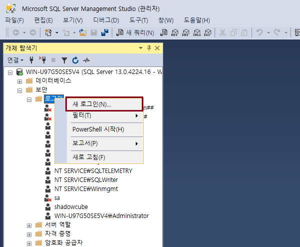
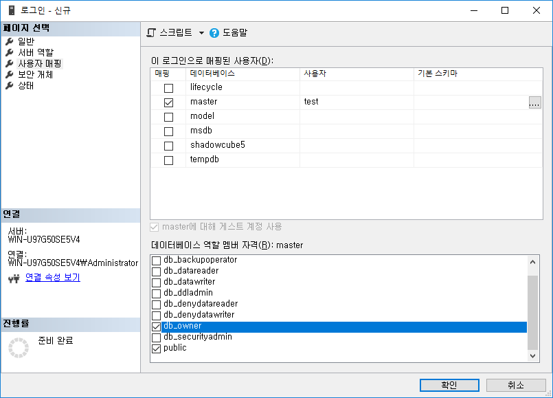

SQL Server 운영 기초
로그인 계정
-
새로운 계정을 생성하는 방법과 그 계정으로 SQL Server 에 접속하는 방법에 대해 알아보자.
로그인 계정 생성
-
데이터베이스 > 보안 > 로그인 > 새 로그인

-
이름 입력, SQL Server 인증 선택, 암호 정책 강제 적용 해제
-
사용자 매핑 > 역할 멤버에 체크

Let's Prcactice
-
설치 시, 윈도우 인증으로 설치 했던 PC 에 신규 생성한 로그인 계정으로 접속이 될까?
-
최신 SQL Server 는 sa 계정을 허용하지 않는다. 그 이유는 무엇일까?
처음으로
이전
다음